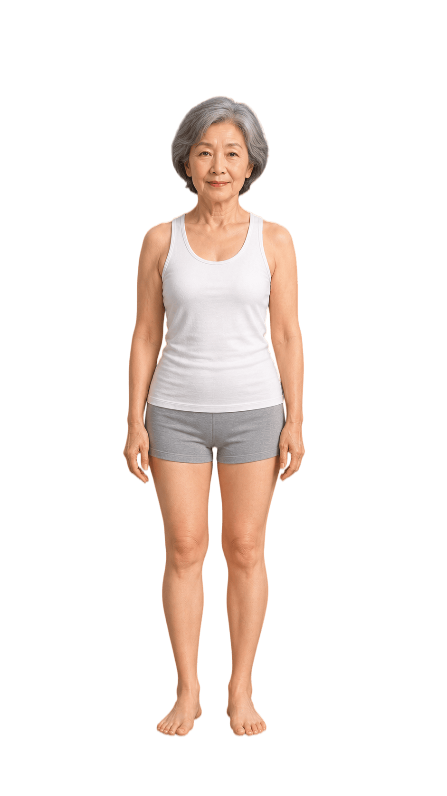

血管里长了斑块
查看详情您有高血压 8 年、高血脂 5 年，这次颈动脉检查发现血管壁上长了一块"斑块"（约 8×2.1 毫米），就像水管内壁结了一层水垢。目前水管还没堵，也没出现过心脑血管问题。现在要做的是管住血压、血脂和体重，别再让它长大；再带上检查结果问问医生，看现在的用药量够不够。
这次体检总体情况不错，没有发现需要马上处理的大毛病，血糖、肝功能、血常规都正常。需要留意的是血管里长了斑块、骨头开始变"松"、肾脏功能比以前弱了一些、肺上有个小结节。到了这个年纪，身体不需要追求每个指标都"完美"，关键是把它当回事、慢慢保养，具体分析与建议见下方各模块。
您有高血压 8 年、高血脂 5 年，这次颈动脉检查发现血管壁上长了一块"斑块"（约 8×2.1 毫米），就像水管内壁结了一层水垢。目前水管还没堵，也没出现过心脑血管问题。现在要做的是管住血压、血脂和体重，别再让它长大；再带上检查结果问问医生，看现在的用药量够不够。
骨密度检查提示骨量减少，骨头比年轻时"脆"了一些，还没到骨质疏松的程度。加上年纪大了、腿劲不如从前，摔倒的风险在增加。现在开始做对的事完全来得及：每天走动、做点力量锻炼、注意补钙和维生素 D，再做好防摔倒措施——这比"躺着静养"更护骨头。
肾脏是身体的"过滤器"，这次检查显示它的过滤功能比正常水平略低了一点。单看一次结果还不能说得了肾病——年纪大了、血压高、喝水少都可能影响它。重点是过一阵再复查一次、看趋势，同时别乱吃伤肾的药，尤其止痛药。
肺里发现一个约 5 毫米的小点，边界清楚、没有明显坏迹象，绝大多数这样的结节是良性的，不等于肺癌。单靠这一次拍片判断不了它是什么，也不需要紧张。建议带着片子去呼吸科让医生看一眼，按要求过段时间再拍一次，看它有没有变化。

您的高血压、高血脂已经管理多年，这次血压 136/78，说明平时用药管得不错、血压挺稳，血糖、血脂也都在可控范围。以后值得盯住三件事：血压血脂和体重、肾功能、骨密度。以这次体检为起点，按计划复查就行。

针对：骨头变松、腿劲下降、体重偏重
坚持每天散步，再慢慢加一点简单的力量锻炼——快走、上下楼梯、从椅子上反复站起来、拉弹力带、举小哑铃。运动到微微喘、但还能正常说话就行。
不用追求大重量，以动作稳定、安全为第一目标。
走路和力量锻炼能"喂"骨头、让肌肉更有劲，腿脚有力了，自然不容易摔跤。

针对：血管斑块、血压血脂偏高
一天三顿正常吃，重点少吃——咸菜腌菜、肥肉、油炸食品、加工肉肠；多吃——蔬菜、杂粮、鱼、豆制品、坚果。甜点和零食少吃。
每天至少一餐做到"半盘菜 + 适量肉蛋 + 适量主食"；咸菜腌菜从"经常吃"改成"偶尔吃"。
少盐少油能帮血压血脂稳稳的，多吃蔬菜杂粮对血管有好处。
针对：肾功能偏弱、长期高血压
每次要加新药前，先问一句"这个药要不要按肾功能调整"。
很多药要经过肾脏排出，肾功能弱的时候少吃"伤肾药"，就是帮肾脏减负。
别着急，一步一步来，身体会慢慢给回应。
现在开始
约 1–3 个月
约 3–6 个月
约 6–12 个月
本报告解读仅供参考，不能替代专业医师的诊断与治疗建议。如有不适请及时就医。